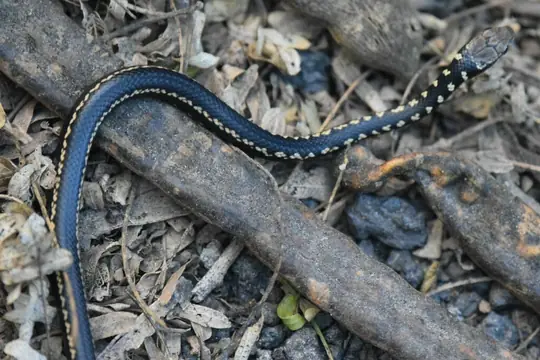
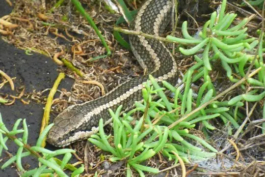
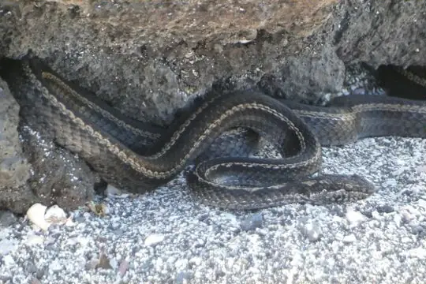
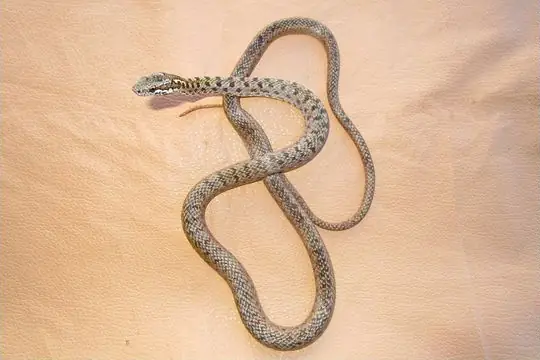
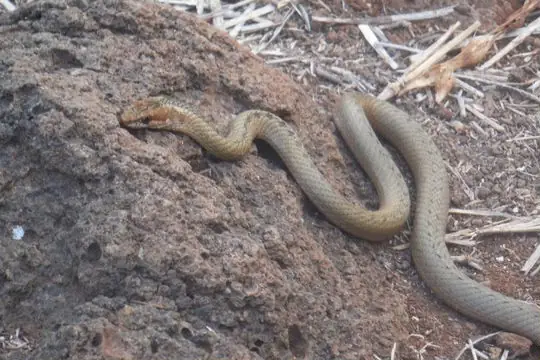
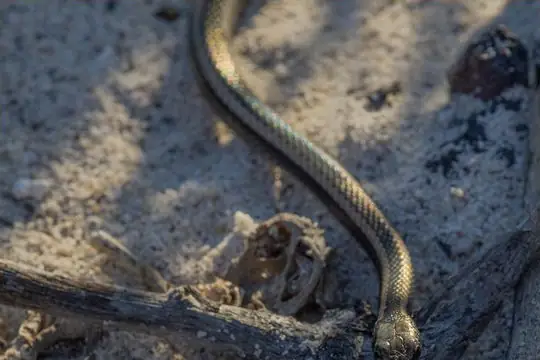
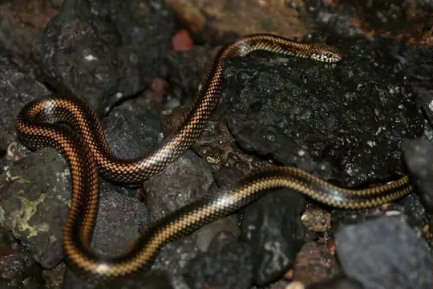
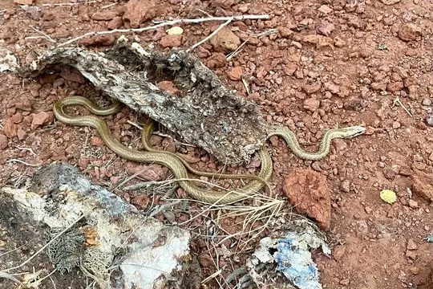

Pseudalsophis
The genus Pseudalsophis (family Colubridae) has 10 living species in SnakeList (none venomous), recorded in 3 countries.
- 10living species
- 10non-venomous
- 3countries
About the genus
A genus of the family Colubridae (colubrids).
Species
Showing 10 species
 Andean RacerPseudalsophis elegans
Andean RacerPseudalsophis elegans- No photo yetBanded Galapagos SnakePseudalsophis slevini

Darwin's RacerPseudalsophis darwini
Española RacerPseudalsophis hoodensis
Fernandina RacerPseudalsophis occidentalis
Galapagos RacerPseudalsophis biserialis
Santa Cruz RacerPseudalsophis dorsalis
Santiago RacerPseudalsophis hephaestus
Striped Galapagos SnakePseudalsophis steindachneri
Thomas' RacerPseudalsophis thomasi
No snakes in Pseudalsophis match.
About the genus Pseudalsophis
- Distribution: living species recorded in 3 countries, on one continent: South America.
- Family: Colubridae.
- Countries and territories: Chile, Ecuador, Peru.
Compare its species
Its living species side by side. Lengths come only from SnakeList’s reviewed, sourced accounts; the others are left blank rather than guessed.
| Species | Venom | Recorded in | Adult length (reviewed accounts) |
|---|---|---|---|
| Andean Racer Pseudalsophis elegans | Non-venomous | 3 countries (South America) | No reviewed account yet |
| Banded Galapagos Snake Pseudalsophis slevini | Non-venomous | 1 country (South America) | No reviewed account yet |
| Darwin's Racer Pseudalsophis darwini | Non-venomous | 1 country (South America) | No reviewed account yet |
| Española Racer Pseudalsophis hoodensis | Non-venomous | 1 country (South America) | No reviewed account yet |
| Fernandina Racer Pseudalsophis occidentalis | Non-venomous | 1 country (South America) | No reviewed account yet |
| Galapagos Racer Pseudalsophis biserialis | Non-venomous | 1 country (South America) | No reviewed account yet |
| Santa Cruz Racer Pseudalsophis dorsalis | Non-venomous | 1 country (South America) | No reviewed account yet |
| Santiago Racer Pseudalsophis hephaestus | Non-venomous | 1 country (South America) | No reviewed account yet |
| Striped Galapagos Snake Pseudalsophis steindachneri | Non-venomous | 1 country (South America) | No reviewed account yet |
| Thomas' Racer Pseudalsophis thomasi | Non-venomous | 1 country (South America) | No reviewed account yet |